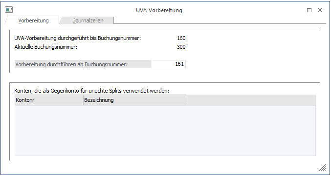

Eine Vorbereitung des UVA-Registers ist notwendig für die Zusammenführung von Erlöskonten (bei denen die Steuer hinterlegt ist) und den Personenkonten, im Falle einer unechten Splitbuchung.
Beispiel 1
Echte Splitbuchung
DF 230A001/
8001
8002
In diesem Fall ist die Splitbuchung und damit die Zusammengehörigkeit der Konten klar erkenntlich - diese Daten können im UVA-Register ohne weitere Maßnahmen ausgewertet werden.
Beispiel 2
Unechte Splitbuchung
DF 230A001/8990
B 8990/ 8001
B 8990/ 8002
In diesem Fall ist für das Programm die Splitbuchung nicht erkenntlich, im Journal befinden sich drei autonome Buchungen deren Zusammenhang für das Programm nicht erkennbar ist. Problem: Die erste Zeile wird wahrscheinlich keinen Steuercode beinhalten und daher den Filterkriterien des UVA-Registers nicht entsprechen. Es ist Aufgabe der Vorbereitung diese Buchungszeilen zu finden und zu ergänzen.
Die Vorbereitung wird im Menüpunkt
1 Auswertungen
1 Steuermeldungen
1 UVA-Vorbereitung
durchgeführt.

Als Information erhalten Sie die aktuelle Buchungsnummer sowie die letzte Buchungsnummer der letzten UVA-Vorbereitung.
Schritt 1
Definition des/der Splitkontos/en für unechte Splits
Ergebnis - es werden alle Erlösbuchungen ohne Debitor angezeigt (und auch alle Aufwandsbuchungen ohne Kreditor).
Schritt 2
Automatische Ergänzung der Buchungen durch den fehlenden Debitor bzw. Kreditor an Hand der Belegnummer. Es wird dabei nach oben gesucht.
Beispiel 1
Buchungscode Belegnummer Soll Haben
DF 123 230A001 8990
Diese Zeile wird gefunden
B 123 8990 8000
B 123 8990 8001
Die Buchungen können zusammengeführt werden, weil die gleiche Belegnummer oberhalb der Splitbuchung gefunden wurde.
Beispiel 2
Buchungscode Belegnummer Soll Haben
DF 123 230A001 8990
Diese Zeile wird nicht gefunden
B 123/1 8990 8000
B 123/2 8990 8001
Die Buchungen können nicht zusammengeführt werden, weil die einzelnen Splitbuchungen abweichende Belegnummern haben.
Beispiel 3
Buchungscode Belegnummer Soll Haben
B 123 8990 8000
B 123 8990 8001
DF 123 230A001 8990
Diese Zeile wird nicht gefunden
Die Buchungen können nicht zusammengeführt werden, weil die Splits sich im Journal in der falschen Reihenfolge befinden.
Um eine erneute Vorbereitung durchzuführen, muss die Checkbox "Vorbereitung durchführen ab Buchungsnummer" aktiviert werden. Wird hier zusätzlich eine Buchungsnummer eingetragen, wird ab dieser die Vorbereitung durchgeführt.
In der oberen Tabelle werden die Konten eingegeben, die als Gegenkonto bei Splitbuchungen verwendet wurden, damit gezielt nach diesen gesucht werden kann.
Nach Bestätigung mit O.K. wird der Vorbereitungslauf gestartet.
Es werden nun aufgrund des eingegebenen Splitkontos die gebuchten DF mit dem Split zusammengeführt.
Falls einige Buchungen nicht zugeordnet werden können, werden diese im Register "Journalzeilen" angezeigt und die entsprechenden Gegenkonten können eingetragen werden. Mit O.K. werden die Änderungen gespeichert und das UVA-Register kann gedruckt werden.